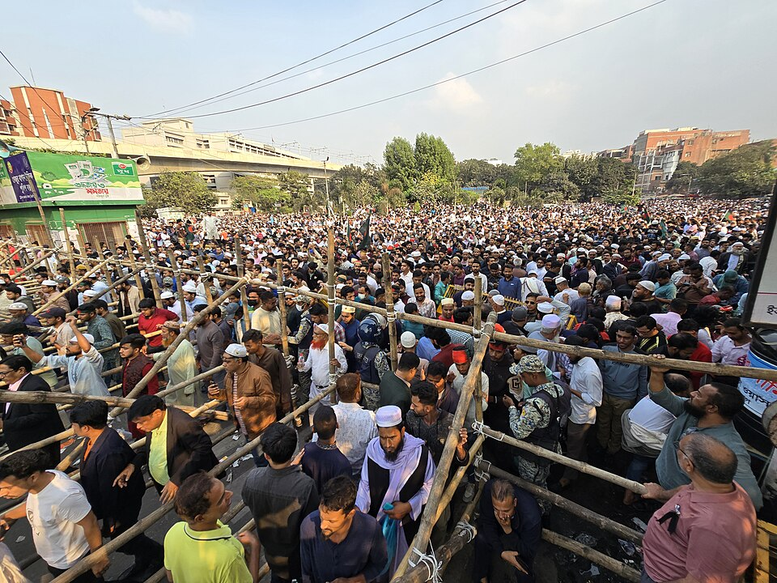

01 — HTML images
Expected: every image below is covered (dark overlay), including the
lazy one and the one whose src is set by JS after 1 s.
Plain <img> — person

Plain <img> — crowd

Plain <img> — landscape control (no person)
<picture> / srcset
Lazy-loading image (loading=lazy)
Image whose src is set by JS after 1 s (data-src pattern)

Input type=image
waiting…